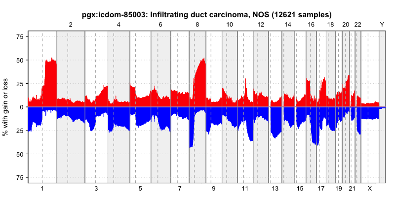
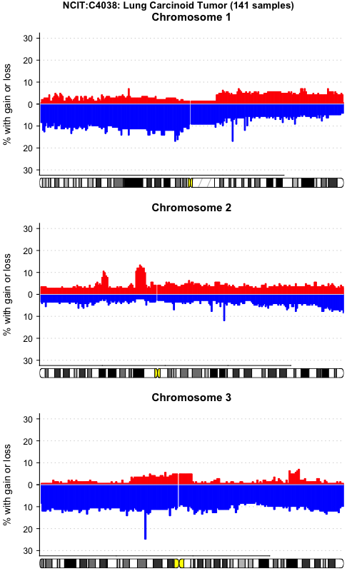
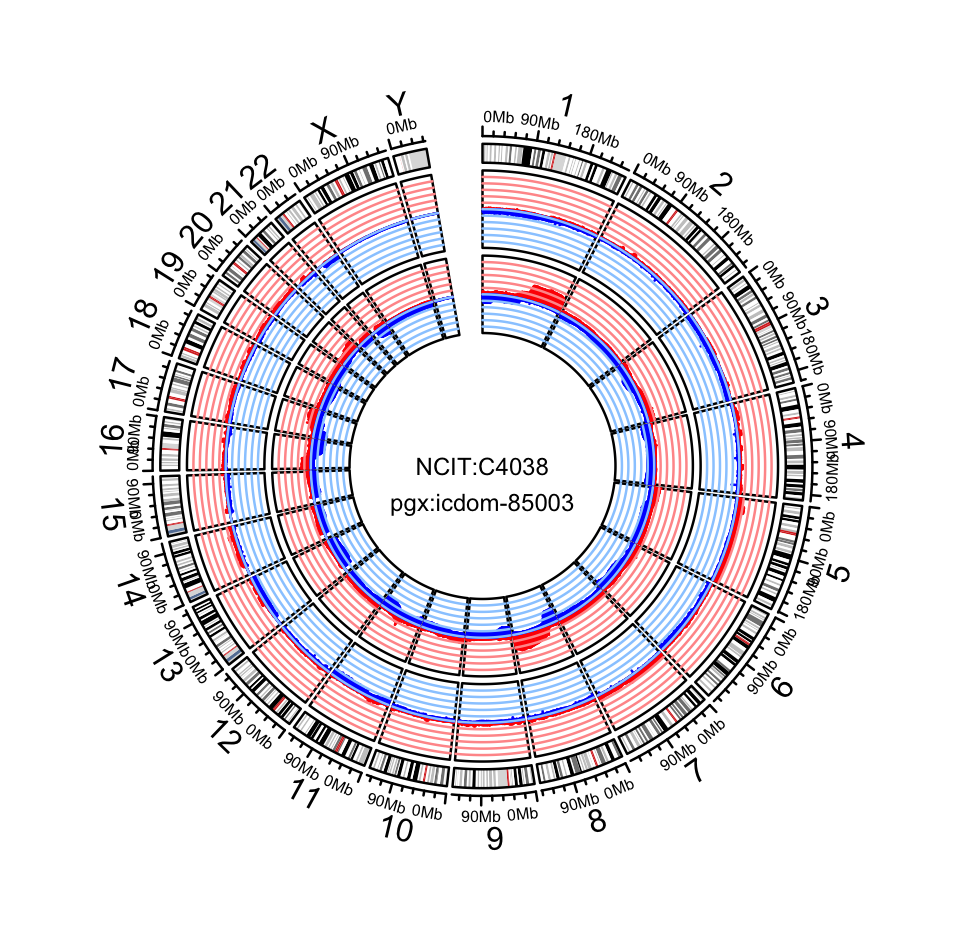

Use Cases¶
Explore Gene CNVs¶
One of the main use cases for the Progenetix resource is the exploration of frequency and disease specificity of genes of interest. Traditionally, the relevance of somatic CNVs hitting a gene in the context of cancer are judged by
- the CNV frequency (i.e. in what fraction of samples the a CNV in this gene is being observed)
- the relative specificity, i.e. how CNVs in this gene compare to
- the overall amount of CNVs in the samples
- the local specificity, i.e. the "focality" of the CNVs
The Progenetix Search Page supports the exploration of regional CNVs through
- support for inserting positions of genes or cytobands into standard Beacon query parameter fields
- selection support for hierarchical disease annotations
- providing example queries as templates
The response of the queries for genomic variants provide some basic statistics, e.g. the relative frequencies of these variants for each classification code (e.g. NCIT, ICD-O) encountered in teh matched samples.
Example Procedure¶
TBD
Visualize CNV patterns¶
The Progenetix resource contains pre-computed CNV frequency profiles for all diagnostic and technical (e.g. derived from a publication or technical platform) categories. These profiles provide a rapid overview of CNV events along the genome but also can serve for the exploration of possible genomic subsets hidden behind the overview profiles.
CNV profile clustering¶
Example Procedure¶
TBD
Download or Plot CNV Frequencies¶
Collation plots¶
The Progenetix resource provides pre-computed CNV frequencies for all its "collations" such as
- cancer types by e.g. NCIt, ICD-O morphology and topography codes
- experimental series, e.g. all samples from a given publication
- custom cohorts, e.g. all samples used in a Progenetix meta-analysis or external project such as TCGA
This data can be accessed through the Progenetix API in data and image format.
Interval frequencies are per default stored in a 1Mb binned format. More information about the API use can be found in the IntervalFrequencies API documentation.
Query-based histograms¶
The Progenetix Beacon responses - depending on their type - usually contain a handover
URL to retrieve CNV histogram and/or sample plots of the samples matched by the query.
The bycon API now offers a direct access to the histograms without the need to deparse
JSON response first. The switch to the histogram is ionitiated by adding &output=histoplot
to the Beacon query URL. Then, the API will first query the samples and then perfor
a handover to the plotting API. Please be aware that this procedure is best suited for limited
queries and may lead to a time-out.
Examples:¶
- progenetix.org/beacon/biosamples/?referenceName=9&variantType=EFO:0030067&start=21500000&start=21975098&end=21967753&end=22500000&filters=NCIT:C3058&filters=pgx:cohort-celllines&output=histoplot
- a search for samples with focal deletion in the CDKN2A locus, limited to glioblastoma cell lines
Example Procedure - Download CNV Frequencies¶
Typical cases for the use of collation-specific frequency data could be e.g. the visualization of CNV tracks with 3rd party tools such as Circos or integration in data analysis workflows, e.g. for comparing target genes to local, disease-specific CNV frequencies.
Getting cancer type CNV frequencies¶
All cancer codes for a given classification system can be retrieved though:
- NCIT
- ICD-O Morphologies
- progenetix.org/services/collations?filters=icdom&method=counts&output=text
- please be aware that we have to use transformed ICD-O codes; e.g.
"ICD-O 8500/3" is represented as
pgx:icdom-85003(s/^(\d{4})\/(\d)$/pgx:icdom-$1$2/)
- ICD-O Topographies
Download the data file¶
For any of those codes one can create a .pgxseg file downloader link for the
"IntervalFrequencies" service:
Examples¶
- progenetix.org/services/intervalFrequencies/?output=pgxseg&filters=NCIT:C105555
- progenetix.org/services/intervalFrequencies/?output=pgxseg&filters=icdom-85003
Example Procedure - Download or embed CNV frequency plot¶
For the generation of CNV frequency plots, the same procedure as above for identifying existing frequency maps can be applied. CNV hsitograms in SVG format can be generated for download or embedding through a canonical service URL with added (single) collation code.
Additional plot parameters¶
Plot parameters can be added to the request using a standard &-__parameter__=__value__
syntax. Please be aware of the - prefix.
-size_plotimage_w_px- modifies the width of the plot image in px (default 800)
- progenetix.org/services/collationPlots/?id=PMID:22824167&-size_plotimage_w_px=1084
-size_plotarea_h_px- height of the plot area (excluding labels etc.) in px (default 100)
- progenetix.org/cgi/PGX/cgi/collationPlots.cgi?id=NCIT:C7376&-size_plotarea_h_px=300
-value_plot_y_max- modifies the histogram's maximum value in percent (default 100)
- progenetix.org/cgi/PGX/cgi/collationPlots.cgi?id=pgx:cohort-TCGAcancers&-value_plot_y_max=50
-colorschema- change of colors used for gains and losses
- options
orangeblue(default)redgreengreenredbluered
-
-chr2plot- comma-concatenated list of chromosomes to plot
-
default is 1 -> 22 since X & Y are not always correctly normalized for CNV frequencies
-chr2plot=1,2,3,44,5,6,7,8,9,10,11,12,13,14,15,16,17,18,19,20,21,22,X,Y-chr2plot=9
-
- see example above (live representation of embedded API call for this example)
Examples¶
- progenetix.org/services/collationPlots/?id=pgx:icdom-85003
- progenetix.org/services/collationPlots/?id=PMID:22824167
Download Sample Data¶
The sample annotations for any type of query - particularly but not limited to
single identifier values - can be downloaded in either Beacon v2 JSON
or in a tab-delimited text format (&output=table).
Examples¶
- Download all TCGA cancer samples from Progenetix as tab-delimited table
pgxRpi, an R Library to Access Progenetix Data¶
pgxRpi is an API wrapper package to access data from Progenetix database. More details about this package are in the vignettes. There are several functions in this R package.
Retrieve biosample information¶
You can select biosamples from specific groups of interests, chosen by a filter. The description about filters is here.
biosamples <- pgxLoader(type="biosample", filters = "NCIT:C3512",codematches = TRUE)
Query CNV coverage data of biosamples from specific cohorts¶
The coverage is calculated across 1MB genomic bins, chromosomal arms, whole chromosomes, or whole genome.
The CNV coverage across genomic bins can be accessed by setting output = "pgxmatrix". More details about the data format "pgxmatrix" see the documentation.
cnv.status <- pgxLoader(type="variant", filters = "NCIT:C3058", output="pgxmatrix", codematches = T)
The CNV coverage across chromosomal arms, chromosomes, or whole genome can be accessed by setting output = "coverage".
cnv.status <- pgxLoader(type="variant", filters = "NCIT:C4443", output="coverage", codematches = F)
Query and export segment copy number variant data¶
You can download the copy number variant data of individual biosamples. The biosample id can be queried by pgxRpi or by Progenetix website. The variant data exportation supports different output formats, more information see vignettes.
variants <- pgxLoader(type="variant", biosample_id = c("pgxbs-kftva6du","pgxbs-kftva6dv","pgxbs-kftva6dx"),output = "pgxseg")
Query and visualize CNV frequencies¶
You can query the CNV frequency of specific filters, namely specific cohorts. There are two available data formats. One is .pgxseg, good for visualization. Another is .pgxmatrix, good for analysis.
frequency <- pgxLoader(type="frequency", output ='pgxseg',
filters=c("NCIT:C4038","pgx:icdom-85003"),
codematches = TRUE)
The data visualization requires the input data with .pgxseg format. You can plot the frequency by genome, by chromosomes, or plot like circos.
pgxFreqplot(frequency, filters='pgx:icdom-85003')

pgxFreqplot(frequency, filters='NCIT:C4038',chrom=c(1,2,3), layout = c(3,1))

pgxFreqplot(frequency,filters= c("NCIT:C4038","pgx:icdom-85003"),circos = TRUE)

User-Provided CNV Data¶
The Progenetix resource has a limited option to visualize CNV data provided by the users. Data has to be formatted in a standard tab-delimited columnar format, preferably using the .pgxseg file format. Additional information can be found on the upload service page:
The data is only temporary stored on the server with a randomiized access path. At this time we do not provide any long term or login protected data storage and do not store access data.
Example Procedure¶
TBD